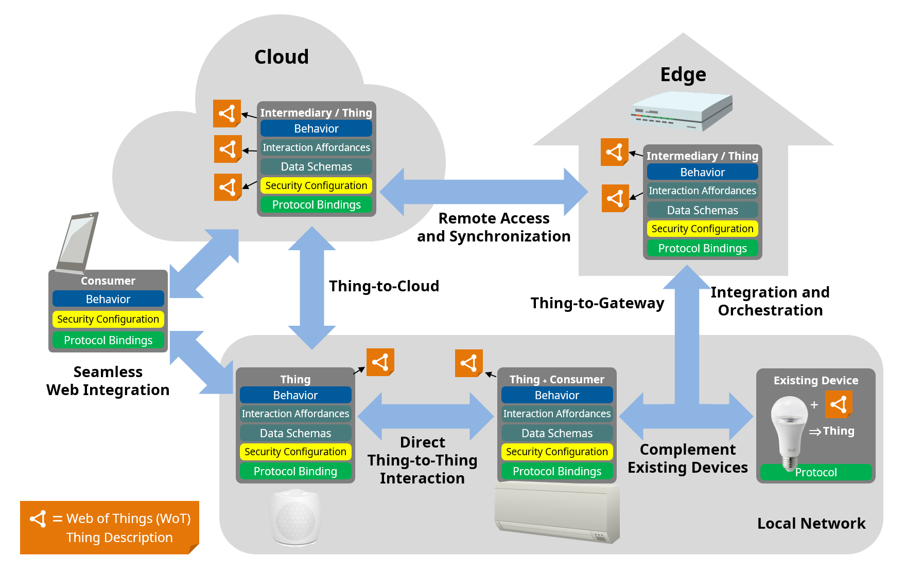

The W3C Web of Things (WoT) is intended to enable
interoperability across IoT platforms and application
domains.
Overall, the goal of the WoT is to preserve and complement existing
IoT standards and solutions. In general, the W3C WoT architecture is
designed to describe what exists rather than to prescribe
what to implement.
This WoT Architecture specification describes the abstract
architecture for the W3C Web of Things.
This abstract architecture is based on a
set of requirements that were derived from use cases for
multiple application domains as described in [[WOT-USE-CASES-REQUIREMENTS]].
A set of modular building blocks were identified whose detailed
specifications are given in other documents.
This document describes how these building blocks are related and work together.
The WoT abstract architecture defines a basic conceptual
framework that can be mapped onto a variety of concrete deployment scenarios,
several examples of which are given.
However, the abstract architecture described in this specification does not
itself define concrete mechanisms or prescribe any concrete implementation.
This document describes an abstract architecture design.
However, there is an
Implementation Report
that describes a set of concrete implementations based on the associated WoT Thing Description
specification.
These are implementations following the W3C Web of Things architecture.
Introduction
The goals of the Web of Things (WoT) are to improve the interoperability
and usability of the Internet of Things (IoT). Through a collaboration
involving many stakeholders over many years, several building
blocks have been identified that help address these challenges.
This specification is focused on the scope of W3C WoT standardization,
which can be broken down into these building blocks as well as the abstract
architecture that defines how they are related.
The building blocks are defined and described in detail in separate specifications.
However, in addition to defining the abstract architecture and its terminology and
conceptual framework,
this specification also serves as an introduction to the WoT building blocks,
and explains their interworking:
The Web of Things (WoT) Thing Description [[?WOT-THING-DESCRIPTION]]
normatively provides a machine-readable
data format for describing the metadata and network-facing interfaces of Things.
It is based upon the fundamental concepts introduced in this document, such as
interaction affordances.
The Web of Things (WoT) Binding Templates [[?WOT-BINDING-TEMPLATES]]
provides informational guidelines on how to define network-facing interfaces in Things for
particular protocols and IoT ecosystems, which we call Protocol Bindings.
The document also provides examples for a number of existing IoT
ecosystems and standards.
The Web of Things (WoT) Scripting API [[?WOT-SCRIPTING-API]],
which is optional, enables the implementation of
the application logic of a Thing using a common JavaScript API
similar to the Web browser APIs. This simplifies IoT application
development and enables portability across vendors and devices.
The Web of Things (WoT) Security and Privacy Guidelines [[?WOT-SECURITY]]
represent a cross-cutting building block.
This informational document provides guidelines for the secure implementation and
configuration of Things,
and discusses issues which should be considered in any systems implementing W3C WoT.
However, it should be emphasized that
security and privacy can only be fully evaluated in the context
of a complete set of concrete mechanisms for a specific implementation,
which the WoT abstract architecture does not fully specify.
This is especially
true when the WoT architecture is used descriptively for pre-existing systems,
since the W3C WoT cannot constrain the behavior of such systems, it can only
describe them.
In this document we also discuss privacy and security risks and their mitigation
at a high level in section .
This specification also covers non-normative architectural aspects
and conditions for the deployment of WoT systems.
These guidelines are described in the context of example deployment scenarios,
although this specification does not normatively define specific concrete
implementations.
This specification serves as an umbrella for W3C WoT
specifications and defines the basics such as terminology
and the underlying abstract architecture of the W3C Web of
Things. In summary, the purpose of this specification is to
provide:
a set of application domains in
that were considered to identify use cases for the W3C WoT Architecture,
a definition of the abstract architecture in
an overview of a set of WoT building blocks
and their interplay in ,
an informative guideline on how to map the abstract architecture to
possible concrete implementations in
,
informative examples of possible deployment scenarios in ,
and a discussion, at a high level, of
security and privacy considerations to be aware of when
implementing a system based on the W3C WoT architecture in
.
Additional requirements, use cases, conceptual features and new building blocks will be
addressed in a future revision of this document.
Terminology
This specification uses the following terms as defined here.
The WoT prefix is used to avoid ambiguity for terms that are
(re)defined specifically for Web of Things concepts.
Action
An Interaction Affordance that allows to invoke a
function of the Thing, which manipulates state
(e.g., toggling a lamp on or off)
or triggers a process on the Thing (e.g., dim a lamp over time).
Binding
Templates
A re-usable collection of blueprints for the
communication with different IoT platforms.
The blueprints provide information to map Interaction Affordances
to platform-specific messages through WoT Thing Description
as well as implementation notes for the required protocol stacks
or dedicated communication drivers.
Consumed Thing
A software abstraction that represents a remote
Thing used by the local application. The abstraction might be
created by a native WoT Runtime, or instantiated
as an object through the WoT Scripting API.
Consuming a Thing
To parse and process a TD document and from it create a Consumed
Thing software abstraction as interface for the application in the local
runtime environment.
Consumer
An entity that can process WoT Thing Descriptions
(including its JSON-based representation format)
and interact with Things (i.e., consume Things).
Data Schema
A data schema describes the information model and the related payload structure
and corresponding data items that are passed between Things
and Consumers during interactions.
Digital Twin
A digital twin is a virtual representation of a
device or a group of devices that resides on a cloud
or edge node. It can be used to represent
real-world devices which may not be continuously online,
or to run simulations of new applications and services,
before they get deployed to the real devices.
Domain-specific Vocabulary
Linked Data vocabulary that can be used in the WoT
Thing Description, but is not defined by W3C WoT.
Edge Device
A device that provides an entry point into
enterprise or service provider core networks. Examples
include gateways, routers, switches, multiplexers, and a
variety of other access devices.
Event
An Interaction Affordance that describes an event source,
which asynchronously pushes event data to Consumers
(e.g., overheating alerts).
Exposed Thing
A software abstraction that represents a locally hosted Thing
that can be accessed over the network by remote Consumers.
The abstraction might be created by a native WoT Runtime,
or instantiated as an object through the WoT Scripting API.
Exposing a Thing
To create an Exposed Thing software abstraction in the
local runtime environment to manage the state of a Thing
and interface with the behavior implementation.
Hypermedia Control
A serialization of a Protocol Binding in hypermedia, that is,
either a Web link [[RFC8288]] for navigation or a Web form for
performing other operations. Forms can be seen as request templates
provided by the Thing to be completed and sent by the Consumer.
Interaction Affordance
Metadata of a Thing that shows and describes the possible choices to Consumers,
thereby suggesting how Consumers may interact with the Thing.
There are many types of potential affordances, but
W3C WoT defines three types of Interaction Affordances:
Properties, Actions, and Events.
A fourth Interaction Affordance is navigation, which is already available on the Web through linking.
Interaction Model
An intermediate abstraction that formalizes and narrows the
mapping from application intent to concrete protocol operations.
In W3C WoT, the defined set of Interaction Affordances constitutes the Interaction Model.
Intermediary
An entity between Consumers and Things that can proxy, augment, or compose Things
and republish a WoT Thing Description that points to the WoT Interface on the Intermediary instead of the
original Thing.
For Consumers, an Intermediary may be indistinguishable from a Thing, following the Layered System constraint of
REST.
IoT Platform
A specific IoT ecosystem such as OCF, oneM2M, or
Mozilla Project Things with its own specifications for
application-facing APIs, data model, and protocols or
protocol configurations.
Metadata
Data that provides a description of an entity's abstract characteristics.
For example, a Thing Description is Metadata for a Thing.
Personally Identifiable Information (PII)
Any information that can be used to identify the natural person to whom such information relates,
or is or might be directly or indirectly linked to a natural person.
We use the same definition as [[ISO-IEC-29100]].
Privacy
Freedom from intrusion into the private life or affairs of an individual when that intrusion results from
undue or illegal gathering and use of data about that individual.
We use the same definition as [[ISO-IEC-2382]].
See also Personally Identifiable Information and Security,
as well as other related definitions in [[ISO-IEC-29100]].
Private Security Data
Private Security Data is that component of a Thing's Security Configuration that is
kept secret and is not shared with other devices or users. An example would be private keys in a PKI
system. Ideally such data is stored in a separate memory inaccessible to the application
and is only used via abstract operations, such as signing, that do not reveal the secret
information even to the application using it.
Property
An Interaction Affordance that exposes state of the Thing.
This state can then be retrieved (read) and optionally updated (write).
Things can also choose to make Properties observable by pushing the new
state after a change.
Protocol Binding
The mapping from an Interaction Affordance to concrete messages of a specific protocol,
thereby informing Consumers how to activate the Interaction Affordance.
W3C WoT serializes Protocol Bindings as hypermedia controls.
Public Security Metadata
Public Security Metadata is that component of a Thing's Security Configuration which
describes the security mechanisms and access rights necessary to access a Thing.
It does not include any secret information or concrete data (including public keys), and does
not by itself, provide access to the Thing. Instead, it describes the mechanisms by which access
may be obtained by authorized users, including how they must authenticate themselves.
Security
Preservation of the confidentiality, integrity and availability of information.
Properties such as authenticity, accountability, non-repudiation, and reliability may also be involved.
This definition is adapted from the definition of Information Security in [[ISO-IEC-27000]], which
also includes additional definitions of each of the more specific properties mentioned.
Please refer to this document for other related definitions.
We additionally note that it is desirable that these properties be maintained both in normal operation
and when the system is subject to attack.
Security Configuration
The combination of Public Security Metadata, Private Security Data, and any other configuration
information (such as public keys) necessary to operationally configure the security mechanisms of a Thing.
Servient
A software stack that implements the WoT building
blocks. A Servient can host and expose Things and/or host Consumers that consume Things.
Servients can support multiple Protocol Bindings to enable
interaction with different IoT platforms.
Subprotocol
An extension mechanism to a transfer protocol that
must be known to interact successfully.
An example is long polling for HTTP.
TD
Short for WoT Thing Description.
TD Vocabulary
A controlled Linked Data vocabulary by W3C WoT to
tag the metadata of Things in the WoT Thing Description
including communication metadata of WoT Binding
Templates.
Thing or Web Thing
An abstraction of a physical or a virtual entity
whose metadata and interfaces are described by a WoT
Thing Description, whereas a virtual entity is the
composition of one or more Things.
Thing Directory
A directory service for TDs that provides a Web
interface to register TDs (similar to [[?CoRE-RD]]) and look them up
(e.g., using SPARQL queries or the CoRE RD lookup interface [[?CoRE-RD]]).
Thing Model
A Thing Model is a description for a class of Things that have the same
capabilities. It describes the Properties, Actions, and Events and common metadata that are
shared for an entire group of Things. Compared to a Thing Description, a Thing Model does not contain enough
information to identify or interact with a Thing instance.
Transfer Protocol
The underlying, standardized application layer
protocol without application-specific requirements or
constraints on options or subprotocol mechanisms.
Examples are HTTP, CoAP, or MQTT.
Virtual Thing
An instance of a Thing that represents a Thing that is located
on another system component.
WoT Interface
The network-facing interface of a Thing
that is described by a WoT Thing Description.
WoT Runtime
A runtime system that maintains an execution
environment for applications, and is able to expose and/or
consume Things, to process WoT Thing Descriptions, to maintain Security
Configurations, and to interface with Protocol Binding implementations.
A WoT Runtime may have a custom API or use the optional WoT Scripting API.
WoT Scripting API
The application-facing programming interface
provided by a Servient in order to ease
the implementation of behavior or applications running in a WoT
Runtime. It is comparable to the Web browser APIs.
The WoT Scripting API is an optional building block for W3C WoT.
WoT Servient
Synonym for Servient.
WoT Thing Description or Thing Description
Structured data describing a Thing. A WoT Thing Description comprises
general metadata, domain-specific metadata, Interaction Affordances
(which include the supported Protocol Bindings), and links to related Things.
The WoT Thing Description format is the central building block of W3C WoT.
TODO: Need to add definitions for discovery, thing models, profiles, lifecycle.
Application Domains (Verticals)
This section presents the application domains and use cases
targeted by the W3C WoT and which are used to derive the
abstract architecture discussed in .
The Web of Things architecture does not put any
limitations on use cases and application domains. Various
application domains have been considered to collect common
patterns that have to be satisfied by the abstract
architecture.
The following sections are not exhaustive. Rather they
serve as illustrations, where connected things can provide
additional benefit or enable new scenarios.
Note:
WoT use cases and requirements are being collected and organized in the
https://github.com/w3c/wot-usecases repository.
A detailed Use Cases and Requirements document is being prepared and will be published as a W3C Note [[WOT-USE-CASES-REQUIREMENTS]].
A draft is available at https://w3c.github.io/wot-usecases/.
Consumer
In the consumer space there are multiple assets
that benefit from being connected. Lights and air
conditioners can be turned off based on room
occupancy. Window blinds can be closed automatically
based on weather conditions and presence. Energy and
other resource consumption can be optimized based on
usage patterns and predictions.
The consumer use cases in this section includes
Smart Home use case.
shows an example of a
Smart Home. In this case, gateways are connected to
edge devices such as sensors, cameras and home
appliances through corresponding local communication
protocols such as KNX, ECHONET, ZigBee, DECT ULE and
Wi-SUN. Multiple gateways can exist in one home,
while each gateway can support multiple local
protocols.
Gateways can be connected to the cloud through
the internet, while some appliances can be connected
to the cloud directly. Services running in the cloud
collect data from edge devices and analyze the data,
then provide value to users through the edge devices
and other UX devices.
Smart Home
Smart home provides consumer benefits such as
remote access and control, voice control and home
automation. Smart home also enables device
manufacturers to monitor and maintain devices
remotely. Smart home can realize value added
services such as energy management and security
surveillance.
Industrial
The industrial use cases in this section are
applicable to different industry verticals.
Due to the nature of overlaps in the application
scenarios, different verticals have similar use
cases.
Example: Smart Factory
shows an example
of a Smart Factory. In this case, field-level,
cell and line controllers automate different
factory equipment based on industrial
communication protocols such as PROFINET,
Modbus, OPC UA TSN, EtherCAT, or CAN. An
industrial edge device collects selected data
from various controllers and makes it available
to a cloud backend service, e.g., for remote
monitoring via a dashboard or analyzes it for
preventive maintenance.
Smart Factory
Smart factories require advanced monitoring of
the connected manufacturing equipment as well of the
manufactured products. They benefit from predictions
of machine failures and early discovery of anomalies
to prevent costly downtime and maintenance efforts.
Additionally, monitoring of connected
manufacturing equipment and the environment at the
production facility for the presence of poisonous
gases, excessive noise or heat increases the safety
of the workers and reduces the risks of incidents or
accidents.
Real-time monitoring and KPI calculations of
production equipment helps to detect productivity
problems and optimize the supply chain.
Transportation
& Logistics
Monitoring of vehicles, fuel costs, maintenance
needs and assignments helps to optimize the full
utilization of the vehicle fleet.
Shipments can be tracked to be en-route to ensure
consistent quality and condition of the transported
goods. This is especially useful to assert the
integrity of the cold-chain from warehouses to
refrigerated trucks to delivery.
Centralized monitoring and management of stock in
warehouses and yards can prevent out of stock and
excessive stock situations.
Utilities
Automated reading of residential and C&I
(Commercial and Industrial) meters, and billing
offers continuous insights into resource consumption
and potential bottlenecks.
Monitoring the condition and output of
distributed renewable energy generation equipment
enables optimization of distributed energy
resources.
Monitoring and remote-controlling of distribution
equipment helps to automate the distribution
process.
Continuous monitoring of generation and
distribution infrastructure is improving safety of
utilities crew in the field.
Oil and Gas
Offshore platform monitoring, leakage detection
and prediction of pipelines as well as monitoring
and controlling the levels in tanks and reservoirs
helps to improve the industrial safety for the
workforce as well as for the environment.
Automated calculation of a distributed stock
through various storage tanks and delivery
pipes/trucks allows for improved planning and
resource optimization.
Insurance
Proactive Asset Monitoring of high value assets
such as connected structures, fleet vehicles, etc.
mitigates the risk of severe damage and high costs
due to predictions and early detection of incidents.
Usage based insurance can be offered with usage
tracking and customized insurance policies.
Predictive weather monitoring and re-routing
fleet vehicles to covered garages can limit loss due
to hail damage, tree damage.
Engineering
and Construction
Monitoring for industrial safety reduces the
risks of security hazards. Monitoring of assets at
construction site can prevent damage and loss.
Agriculture
Soil condition monitoring and creating optimal
plans for watering, fertilizing as well as
monitoring the produce conditions optimize the
quality and output of agricultural produce.
Healthcare
Data collection and analytics of clinical trial
data helps to gain insights into new areas.
Remote patient monitoring mitigates the risk of
undetected critical situations for elderly people
and patients after hospitalization.
Environment
Monitoring
Environment monitoring typically relies on a lot
of distributed sensors that send their measurement
data to common gateways, edge devices and cloud
services.
Monitoring of air pollution, water pollution and
other environmental risk factors such as fine dust,
ozone, volatile organic compound, radioactivity,
temperature, humidity to detect critical environment
conditions can prevent unrecoverable health or
environment damages.
Smart Cities
Monitoring of Bridges, Dams, Levees, Canals for
material condition, deterioration, vibrations
discovers maintenance repair work and prevents
significant damage. Monitoring of highways and
providing appropriate signage ensures optimized
traffic flow.
Smart Parking is optimizing and tracking the
usage and availability of parking spaces and
automates billing/reservations.
Smart control of street lights based on presence
detection, weather predictions, etc. reduces cost.
Garbage containers can be monitored to optimize
the waste management and the trash collection route.
Smart Buildings
Monitoring the energy usage throughout the
building helps to optimize resource consumption and
reduce waste.
Monitoring the equipment in the buildings such as
HVAC, Elevators, etc. and fixing problems early
improves the satisfaction of occupants.
Connected Car
Monitoring of operation status, prediction of
service needs optimizes maintenance needs and costs.
Driver safety is enhanced with notifications of an
early warning system for critical road and traffic
conditions.
Connected Car
Example
shows an example
of a Connected Car. In this case, a gateway
connects to car components through CAN and to
the car navigation system through a proprietary
interface. Services running in the cloud collect
data pushed from car components and analyze the
data from multiple cars to determine traffic
patterns. The gateway can also consume cloud
services, in this case, to get traffic data and
show it to the driver through the car navigation
system.
Connected Car
System Topoplogies (Horizontals)
This section introduces common deployment patterns that
illustrate how devices/things interact with controllers,
other devices, agents and servers.
In this section, we use the term client role as an
initiator of a transport protocol, and the term server role
as a passive component of a transport protocol.
This does not imply prescribing a specific role on any system component.
A device can be in a client and server role simultaneously.
One example of this dual role is a sensor, that registers itself with a cloud service
and regularly sends sensor readings to the cloud.
In the response messages the cloud can adjust the transmission rate of the
sensor's messages or select specific sensor attributes, that are to be transmitted in future messages.
Since the sensor registers itself with the cloud and initiates connections, it is in the 'client' role.
However, since it also reacts to requests, that are transmitted in response messages, it also fulfills a 'server'
role.
The following sections illustrate the roles, tasks, and use case patterns with increasing complexity.
They are not exhaustive and are presented to motivate for the WoT architecture and building blocks
that are defined in later sections of this specification.
Device Controllers
The first use case is a local device controlled by a
user-operated remote controller as depicted in . A remote
controller can access an electronic appliance
through the local home network directly. In this
case, the remote controller can be implemented by a
browser or native application.
In this pattern, at least one device like the
electronic appliance has a server role that can
accept a request from the other devices and responds
to them, and sometimes initiates a mechanical
action. The other device like the remote controller
has a client role that can send a message with a
request, like to read a sensor value or to turn on
the device.
Moreover, to emit a current state or event notification of a device,
the device may have a client role that can send a message
to another device, which has server roles.
Device Control
Thing-to-Thing
shows an example of a
direct Thing-to-Thing interaction. The scenario is
as follows: a sensor detects a change of the room
condition, for example the temperature exceeding a
threshold, and issues a control message like "turn
on" to the electronic appliance. The sensor unit can
issue some trigger messages to other devices.
In this case, when two devices that have server
roles are connected, at least one device must have
also a client role that issues a message to the
other to actuate or notify.
Control Agent
Remote Access
This use case contains a mobile remote controller
(e.g., on a smartphone) as shown in . The remote
controller can switch between different network
connections and protocols, e.g., between a cellular
network and a home network, which is using protocols
such as Wi-Fi and Bluetooth. When the controller is
in the home network it is a trusted device and no
additional security or access control is required.
When it is outside of the trusted network,
additional access control and security mechanisms
must be applied to ensure a trusted relationship.
Note that in this scenario the network connectivity
may change due to switching between different
network access points or cellular base stations.
In this pattern, the remote controller and the
electronic appliance have a client and a server role
as in the related scenario in .
Multiple Network Interfaces
Smart Home Gateways
shows a use case
using a Smart Home Gateway. The gateway
is placed between a home network and the Internet.
It manages electronic appliances inside the
house and can receive commands from a remote
controller over the Internet, e.g., from a
smartphone as in the previous use case. It is also
is a virtual representation of a device. The Smart
Home Gateway typically offers proxy and firewall
functionality.
In this pattern, the home gateway has both a
client and a server role. When the remote controller actuates the electronic appliance,
it can connect to the
electronic appliance in the client role and to the
remote controller with the server role.
When the electronic appliance emits a message to the
remote controller, the gateway act as server roles
for the electric appliance, and it act as client roles
for the remote controller.
Smart Home Gateway
Edge Devices
TODO: This section will be expanded to capture recent activities.
An Edge Device or Edge Gateway is similar to a Smart
Home Gateway. We use the term to indicate additional
tasks that are carried out by the edge gateway.
Whereas the home gateway in primarily just
bridges between the public and the trusted network,
the edge device has local compute capabilities and
typically bridges between different protocols. Edge
devices are typically used in industrial solutions,
where they can provide preprocessing, filtering and
aggregation of data provided by connected devices
and sensors.
Edge device
Digital Twins
A digital twin is a virtual representation, i.e.
a model of a device or a group of devices that
resides on a cloud server or edge device. It can be
used to represent real-world devices which may not
be continuously online, or to run simulations of new
applications and services, before they get deployed
to the real devices.
Digital Twin
Digital twins can model a single device, or they
can aggregate multiple devices in a virtual
representation of the combined devices.
Digital Twin for Multiple
Devices
Digital twins can be realized in different ways,
depending on whether a device is already connected
to the cloud, or whether it is connected to a
gateway, which itself is connected to the cloud.
Cloud-ready Devices
shows an
example where electronic appliances are
connected directly to the cloud. The cloud
mirrors the appliances and, acting as a digital
twin, can receive commands from remote
controllers (e.g., a smartphone). Authorized
controllers can be located anywhere, as the
digital twin is globally reachable.
Appliance twin for a
Cloud-ready Devices
Legacy Devices
shows an
example where legacy electronic appliances
cannot directly connect to the cloud. Here, a
gateway is needed to relay the connection. The
gateway works as:
integrator of a variety of legacy
communication protocols both in the physical
and logical view
firewall toward the Internet
privacy filter which substitutes real
image and/or speech, and logs data locally
local agent in case the network
connection is interrupted
emergency services running locally when
fire alarms and similar events occur
The cloud mirrors the gateway with all
connected appliances and acts as a digital twin
that manages them in the cloud in conjunction
with the gateway. Furthermore, the cloud can
receive commands from remote controllers (e.g.,
a smartphone), which can be located anywhere.
A Digital Twin for a
Legacy Device
Multi-Cloud
Typical IoT deployments consist of multiple
(thousands) of devices. Without a standardized
mechanism, the management of firmware updates for
specific clouds require a lot of effort and hinders
wider scale IoT adoption.
The primary benefit of a standardized mechanism
for describing devices and device types is the
capability of deploying devices to different cloud
environments without the need of doing customization
at device software / firmware level, i.e., installing
cloud specific code to a device. This implies that
the solution is flexible enough to describe devices
in a way that allows on-boarding and using devices
in multiple IoT cloud environments.
This drives adoption of Web of Things devices,
since it enables easy usage of new devices in an
existing deployment, as well as migration of
existing devices from one cloud to the other.
Cross-domain Collaboration
show an example of a
cross-domain collaboration. In this case, each
system involves other systems in other domains, such
as Smart Factory with Smart City, Smart City with
Smart Home. This type of system is called
"Symbiotic" ecosystem, as shown in [[IEC-FOTF]].
There are two collaboration models: direct
collaboration and indirect collaboration. In the
direct collaboration model, systems exchange
information directly with each other in a
peer-to-peer manner. In the indirect collaboration,
systems exchange information via some collaboration
platform. In order to maintain and continue this
collaboration, each system provides the metadata of
their capabilities and interfaces and adapts itself
to others.
Cross-domain collaboration
System Integration
The previous section described various architecture
patterns. In these patterns, some functional entities
such as the devices including the legacy devices,
controllers, gateways and cloud servers are located at
physical locations such as inside building, outside
buildings, and data centers.
is an overview that shows the combinations and
communication paths of these entities.
In a transport protocol layer, each entity arbitrarily
selects a suitable role for communications. For example,
a device may act as a server when the device provides a service
to indefinite number of applications. On the other hand,
if a device has limited or intermittent network connectivity,
they may act as a client and actively send message to an application
when network is available. Regardless of this,
in application layer, an application sees that a device provides abstract
interfaces to interact and the application can interact with the device
using their abstract interfaces.
Use Case Overview
Abstract WoT System Architecture
This section is normative.
To address the use cases in Section 4 and fulfill the requirements in Section 5,
the Web of Things (WoT) builds on top of the concept of Web Things – usually simply called Things
– that can be used by so-called Consumers.
This section provides the background and normative assertions to define the overall W3C Web of Things
architecture.
As the Web of Things addresses stakeholders from different domains, certain aspects of Web technology are
explained in more detail, in particular the concept of hypermedia.
System Components
TODO: Create introductory text that introduces the concepts from the following chapters.
Things and Consumers
A Thing is the abstraction of a physical or virtual entity (e.g., a device or a room) and is described by
standardized metadata.
In W3C WoT, the description metadata MUST be a WoT Thing Description (TD) [[?WOT-THING-DESCRIPTION]].
Consumers MUST be able to parse and process the TD representation format, which is based on JSON
[[!RFC8259]].
The format can be processed either through classic JSON libraries or a JSON-LD processor,
as the underlying information model is graph-based and its serialization compatible with JSON-LD 1.1
[[?JSON-LD11]].
The use of a JSON-LD processor for processing a TD additionally enables semantic processing
including transformation to RDF triples, semantic inference and accomplishing tasks given
based on ontological terms, which would make Consumers behave more autonomous.
A TD is instance-specific (i.e., describes an individual Thing, not types of Things)
and is the default external, textual (Web) representation of a Thing.
There MAY be other representations of a Thing such as an HTML-based user interface,
simply an image of the physical entity,
or even non-Web representations in closed systems.
To be a Thing, however, at least one TD representation MUST be available.
The WoT Thing Description is a standardized, machine-understandable representation format
that allows Consumers to discover and interpret the capabilities of a Thing (through semantic
annotations)
and to adapt to different implementations (e.g., different protocols or data structures) when interacting with a
Thing,
thereby enabling interoperability across different IoT platforms, i.e., different ecosystems and
standards.
Consumer-Thing interaction
A Thing can also be the abstraction of a virtual entity.
A virtual entity is the composition of one or more Things (e.g., a room consisting of several sensors and
actuators).
One option for the composition is to provide a single, consolidated WoT Thing Description that contains
the superset of capabilities for the virtual entity.
In cases where the composition is rather complex, its TD may link to hierarchical sub-Things
within the composition.
The main TD acts as entry point and only contain general metadata and potentially overarching
capabilities.
This allows grouping of certain aspects of more complex Things.
Thing Models
TODO: Create section.
Links
Linking does not only apply to hierarchical Things, but relations between Things and other resources in
general.
Link relation types express how Things relate, for instance, a switch controlling a light or a room monitored by
a motion sensor.
Other resources related to a Thing can be manuals, catalogs for spare parts, CAD files, a graphical UI,
or any other document on the Web.
Overall, Web linking among Things makes the Web of Things navigable, for both humans and machines.
This can be further facilitated by providing Thing directories that manage a catalog of available Things,
usually by caching their TD representation.
In summary,
WoT Thing Descriptions
MAY link to other Things and other resources on the Web to form a Web of Things.
Linked Things
Things must be hosted on networked system components with a software stack to realize interaction through a
network-facing interface, the WoT Interface of a Thing.
One example of this is an HTTP server running on an embedded device with sensors and actuators interfacing the
physical entity behind the Thing abstraction.
However, W3C WoT does not mandate where Things are hosted; it can be on the IoT device directly, an
Edge device such as a gateway, or the cloud.
A typical deployment challenge is a scenario, where local networks are not reachable from the Internet,
usually because of IPv4 Network Address Translation (NAT) or firewall devices.
To remedy this situation, W3C WoT allows for Intermediaries between Things and Consumers.
Another remedy for restricted local networks is binding the WoT Interface to a protocol
that establishes the connection from the Thing within the local network to a publicly reachable
Consumer.
Things
MAY be bundled together with a Consumer to enable Thing-to-Thing interaction.
Usually, the Consumer behavior is embedded in the software component,
which is also implementing the behavior of the Thing.
The
configuration of the Consumer behavior MAY be exposed through the Thing.
The concepts of W3C WoT are applicable to all levels relevant for IoT applications: the device level, edge
level, and cloud level.
This fosters common interfaces and APIs across the different levels and enables various integration patterns
such as Thing-to-Thing, Thing-to-Gateway, Thing-to-Cloud, Gateway-to-Cloud, and even cloud federation,
i.e., interconnecting cloud computing environments of two or more service providers, for IoT applications.
gives an overview how the WoT concepts introduced above can be applied and
combined to address the use cases described in the WoT Use Cases and Requirements document [[WOT-USE-CASES-REQUIREMENTS]].

Abstract Architecture of W3C WoT
Affordances
A central aspect in W3C WoT is the provision of machine-understandable metadata (i.e., WoT Thing
Descriptions).
Ideally, such metadata is self-descriptive, so that Consumers are able to identify
what capabilities a Thing provides and how to use the provided capabilities.
A key to this self-descriptiveness lies in the concept of affordances.
The term affordance originates in ecological
psychology, but was adopted in the field of
Human-Computer Interaction [[?HCI]] based on the
definition by Donald Norman: "'Affordance' refers to
the perceived and actual properties of the thing,
primarily those fundamental properties that
determine just how the thing could possibly be
used." [[?NORMAN]]
An example for this is a door with a handle.
The door handle is an affordance, which suggests that the door can be opened.
For humans, a door handle usually also suggests how the door can be opened;
an American knob suggests twisting, a European lever handle suggests pressing down.
The hypermedia principle, which is one of the
core foundations of the REST architectural style [[?REST]],
demands that any piece of information available on
the Web be linked to other pieces of information so
that the consumer of the information gets explicit
knowledge about how to navigate the Web and control
Web applications.
Here, the simultaneous presentation of
information and control (provided in
the form of hyperlinks) is a mechanism that affords
Web clients the means to drive Web applications. In this
context, an affordance is the description of a
hyperlink (e.g., via a link relation type and link
target attributes) suggesting Web clients how to navigate
and possibly how to act on the linked resource.
Hence, links provide navigation affordances.
Drawn from this hypermedia principle,
the Web of Things defines Interaction Affordances as metadata of a Thing
that shows and describes the possible choices to Consumers, thereby suggesting
how Consumers may interact with the Thing.
A general Interaction Affordance is navigation, which is activated by following a link,
thereby enabling Consumers to browse the Web of Things.
defines three more types of Interaction Affordances for W3C WoT:
Properties, Actions, and Events.
Overall, this W3C WoT definition is aligned with HCI and interaction designers, who create physical Things,
as well as the REST and microservice community, who is working on Web services in general.
Web Thing
A Web Thing has four architectural aspects of interest:
its behavior, its Interaction Affordances, its security configuration,
and its Protocol Bindings,
as depicted in .
The behavior aspect of a Thing includes both the autonomous behavior and the handlers for the
Interaction Affordances.
The Interaction Affordances provide a model of how Consumers can interact with the Thing
through abstract operations,
but without reference to a specific network protocol or data encoding.
The protocol binding adds the additional detail needed to map each
Interaction Affordance to concrete messages of a certain protocol.
In general, different concrete protocols may be used to
support different subsets of Interaction Affordances,
even within a single Thing. The security configuration
aspect of a Thing represents the mechanisms used to
control access to the Interaction Affordances and the management of
related Public Security Metadata and Private Security Data.
Architectural Aspects of a Thing
Lifecycle
Reorganisation of this section is still under discussion and the current contents reflect a snapshot that is subject to change.
Issue: https://github.com/w3c/wot-architecture/issues/561 contains the details.
TODO:Create introductory text that introduces the succeeding chapters.
Explain the difference between
System Lifecycle
Thing Lifecycle
Information Lifecycle
System Lifecycle
In a system that applies the WoT architecture principles different entities interact with each other and
exchange information between them.
Each entity (consumer, thing, directory, ...) has its own (intrinsic) lifecycle.
For an application scenario, where things are combined into common operation flows, the entire system follows
a lifecycle.
This lifecycle requires a certain flow of information and a sequence of operations that need to be carried out
during the lifetime of the application.
To give a practical example:
A thing has to go through some initial setup and configuration steps, before it can be used by others.
This may include the provisioning of keys, performing configuration operations, onboarding it to a consumer,
registering it with a thing directory and other actions.
When a thing has to be permanently removed from an application, the system has to undergo some state changes
to decomission it from consumers,
remove security credentials, deregister it from directories etc.
These activities change the state of individual system components which impact the entire systen state.
For example a thing, that has been deregistered from a directory service can no longer be looked up.
It is dependent on the use case if the thing can still continue to be used.
We distinguish two fundamentally different application scenarios:
In the simple scenario the thing and the consumer have a direct relationship and gets onboarded to the
consumer directly.
In the alternative case, a thing is registered with a directory and the consumer has to discover/lookup the
thing before it can be initially used.
Simple System Lifecycle
TODO: Create text for Simple System Lifecycle.
Plain System Lifecycle
System Lifecycle with Registration
TODO: Create text for System Lifecycle with Registration
System lifecycle with registration
Thing Lifecycle
Bootstrapping and provisioning devices is an essential part of
setting up devices in all IoT protocol suites.
The main scenarios for provisioning devices with WoT are as
follows:
A device is already provisioned and operational in a
given deployment. Make it work with WoT.
A device is already provisioned and operational in a
given deployment. For management purposes, describe
the device lifecycle stages in a Thing Description.
Bootstrap and provision a device directly with WoT, in
order to become operational for WoT.
Various provisioning schemes are being used in IoT protocol suites.
The text in this section is based on proposals
and studies,
comparing various provisioning schemes, such as OCF, OneM2M,
Lightweight OneM2M, Thing to Thing Research Group (T2TRG),
OPC-UA/Anima, etc.
The provisioning model presented in this section resembles most
with the T2TRG provisioning model.
Common elements of device bootstrapping and provisioning across
various IoT protocol suites are as follows:
Establish the chain of trust, e.g. secure storage, keys,
certificates. This may involve various solutions, such
as manufacturer certificates, out-of-band key provisioning,
connecting to a provisioning server, etc.
Establish device ownership, using a provisioning tool or
service. For instance, the device can be owned by a network
entity, or network service, or service provider, or the
end user.
Provision the device with the access control lists for
the tenants or various levels of users.
Provision the device with access to the services it uses.
Configure the device with used and the exposed services.
Provision and configure the WoT runtime in the device.
Update the configurations or provisioning data.
Decommission a user, application, service, or provisioning.
Return the device to the initial state before provisioning
(e.g. factory reset).
Decommission and irreversibly destroy a device.
Taken into account these provisioning flows, in general a device
can be in one of the following states:
Manufactured: the device is flashed with
a software image. In the case it is certified for a certain
protocol suite, it may be permitted or capable of doing
only limited operations, such as a certain bootstrapping
procedure.
Bootstrapped: the device has an identity
and ownership established, being ready for the next
provisioning steps, like configuration, service provisioning
etc.
This state has different names in various protocol suites,
for instance it is called onboarded in OCF,
bootstrapped in T2TRG, OPC-UA, Anima, LwM2M,
initial provisioning in OneM2M, etc.
Operational: the device is provisioned
and configured, working in normal mode. Some configuration
is possible without leaving this state. That may include
installing and uninstalling applications, reconfiguring
settings, etc.
Note that a device can be operational in its own native
protocol suite and managed by a WoT gateway, or can be
operational for WoT (which may be an application on the device),
or may be operational for Wot and directly provisioned for
WoT.
Maintenance: the device operational state
is interrupted for updating its software and/or configuration.
Destroyed: the device has been wiped out
of all data and software. Hardware kill features may
be activated. The device may be physically destroyed and
never used again. This state is relevant for device management purposes.
It does not exist in OneM2M, LwM2M, OCF, T2TRG and is
called End-of-life in OPC-UA and Anima.
Device Lifecycle
The most typical transitions between lifecycle states are the
following:
Bootstrapping (or onboarding): the device
is provisioned with an identity, the chain of trust is
established, e.g. secure storage, keys, certificates.
This may involve various solutions, such as manufacturer
certificates, out-of-band key provisioning, connecting
to a provisioning server (a quite common scenario). When
provisioning directly to WoT, the device may be registered
with a Thing Directory in this stage. During or
after this process, in some protocol suites rebooting in
a different mode of operation might be also needed.
Provisioning, configuration, commissioning:
the device is provisioned with all resources needed for
its operation (services, applications, access control,
databases etc), and these resources are configured for
operation. Also, the device may be commissioned in a
given environment. These may involve communication with
a server, for instance a Thing Directory or
discovery services.
Settings: the device remains in
Operational state, but may update system, service
or application settings. In some cases, this may include
installing and removing applications.
Update: the device stops normal
operation for undergoing updates in the
Maintenance state, similar to the ones
during provisioning. This may include installing new
software, or removing, installing or updating resources
and their configuration.
It may also include re-commissioning.
Returning to Operational state may be achieved
by resuming operation with updated resources, or may
require a restart of services, or rebooting the device.
Re-bootstrapping: the device identity,
owner and related resources may be changed as described
in the Bootstrapping process.
Factory Reset: the device is returned
to its factory default state.
Destroy: the device is erased from all
data, software and may be physically destroyed.
Information Lifecycle
TODO: Create text for Information Lifecycle
Interaction Model
Originally, a Web resource usually represented a
document on the World Wide Web that can simply be
fetched by a Web client. With the introduction of Web
services, resources became more generic interaction
entities that can implement any kind of behavior. This
very high level of abstraction makes it hard to provide
a loose coupling between applications and resources due to
the manifold interaction possibilities. As a result,
at the time of writing typical API descriptions consist of a static mapping
from an application intent to a resource address,
method, request payload structure, response payload
structure, and expected errors.
This imposes a tight coupling between Web client and Web service.
The Interaction Model of W3C WoT introduces an
intermediate abstraction that formalizes the mapping
from application intent to concrete protocol operations
and also narrows the possibilities how Interaction Affordances
can be modeled.
In
addition to navigation affordances (i.e., Web links),
Things MAY offer three other types of Interaction Affordances
defined by this specification: Properties, Actions, and Events.
While this narrow waist allows to decouple Consumers and Things,
these four types of Interaction Affordances are still able to model virtually all interaction
possibilities found in IoT devices and services.
Properties
A Property is an Interaction Affordance that exposes the state of the Thing.
The state exposed by a Property MUST be retrievable (readable).
Optionally, the state exposed by a Property MAY be updated (writeable).
Things MAY choose to make Properties observable by pushing the new state after a change
(cf. Observing Resources [[?RFC7641]]).
Write-only state should be updated through an Action.
If the data is not fully specified by the Protocol Binding used (e.g., through a media type),
Properties MAY contain one data schema for the exposed state.
Examples of Properties are sensor values (read-only), stateful actuators (read-write),
configuration parameters (read-write), Thing status (read-only or read-write), or computation results
(read-only).
Actions
An Action is an Interaction Affordance that allows to invoke a function of the Thing.
An Action MAY manipulate state that is not directly exposed (cf. Properties),
manipulate multiple Properties at a time, or manipulate Properties based on internal logic (e.g., toggle).
Invoking an Action MAY also trigger a process on the Thing that manipulates state
(including physical state through actuators) over time.
If the data is not fully specified by the Protocol Binding used (e.g., through a media type),
Actions MAY contain data schemas for optional input parameters and output results.
Examples of Actions are changing multiple Properties simultaneously,
changing Properties over time such as fading the brightness of a light (dimming)
or with a process that shall not be disclosed such as a proprietary control loop algorithm,
or invoking a long-lasting process such as printing a document.
Events
An Event Interaction Affordance describes an event source that pushes data asynchronously from the Thing to
the Consumer.
Here not state, but state transitions (i.e., events) are communicated.
Events MAY be triggered through conditions that are not exposed as Properties.
If the data is not fully specified by the Protocol Binding used (e.g., through a media type),
Events MAY contain data schemas for the event data and possible subscription control messages
(e.g., to subscribe with a Webhook callback URI).
Examples of Events are discrete events such as an alarm or samples of a time series that are pushed regularly.
Hypermedia Controls
On the Web, an affordance is the simultaneous presentation of information and controls,
such that the information becomes the affordance through which the user obtains choices.
For humans, the information is usually text or images describing or decorating a hyperlink.
The control is a Web link, which includes at least the URI of the target resource,
which can be dereferenced by the Web browser (i.e., the link can be followed).
But also machines can follow links in a meaningful way, when the Web link is further described
by a relation type and a set of target attributes.
A hypermedia control is the machine-understandable description of how to activate an affordance.
Hypermedia controls usually originate from a Web server and are discovered in-band while a Web client is
interacting with the server.
This way, Web servers can drive clients through Web applications dynamically,
by taking their current state and other factors such as authorization into account.
This is opposed to out-of-band interface descriptions that need to be preinstalled or hardcoded into clients
(e.g., RPC, WS-* Web services, HTTP services with fixed URI-method-response definitions).
W3C WoT makes use of two kinds of hypermedia controls:
Web links [[!RFC8288]], the well-established control to navigate the Web,
and Web forms as a more powerful control to enable any kind of operation.
Links are already used in other IoT standards and IoT platforms such as
CoRE Link Format [[?RFC6690]], OMA LWM2M [[?LWM2M]], and OCF [[?OCF]].
Form is a new concept that besides W3C WoT is also introduced by the
Constrained RESTful Application Language (CoRAL) [[?CoRAL]] defined by the IETF.
Links
Links enable Consumers (or Web clients in the broader sense) to change the current context
(cf. the set of resource representations currently rendered in the Web browser)
or to include additional resources into the current context,
depending on the relation between context and link target.
Consumers do so by dereferencing the target URI,
that is, fetching the resource representation by following a link.
W3C WoT follows the definitions of Web Linking [[!RFC8288]],
where a link is comprised of:
a link context,
a relation type,
a link target, and
optionally target attributes.
Link relation types are either a set of predefined tokens that are registered with IANA [[?IANA-RELATIONS]],
which must adhere to the ABNF [[!RFC5234]]
LOALPHA *( LOALPHA / DIGIT / "." / "-" ) (e.g.,
stylesheet),
or extension types in the form of URIs [[!RFC3986]].
Extension relation types MUST be compared as strings using a case-insensitive comparison.
(If they are serialized in a different format they are to be converted to URIs).
Nevertheless, all-lowercase URIs SHOULD be used for extension relation types. [[!RFC8288]]
In the Web of Things, links are used for discovery and to express relations between Things
(e.g., hierarchical or functional)
and relations to other documents on the Web
(e.g., manuals or alternative representations such as CAD models).
Forms
Forms enable Consumers (or Web clients in the broader sense) to perform operations that go beyond
dereferencing a URI
(e.g., to manipulate the state of a Thing).
Consumers do so by filling out and submitting the form to its submission target.
This usually requires more detailed information about the contents of the (request) message than a link can
provide
(e.g., method, header fields, or other protocol options).
Forms can be seen as a request template,
where the provider pre-filled parts of the information according to its own interface and state,
and left parts blank to be filled by the Consumers (or Web client in general).
W3C WoT defines forms as new hypermedia control.
Note that the definition in CoRAL is virtually identical, and hence compatible [[?CoRAL]].
A form is comprised of:
a form context,
an operation type,
a submission target,
a request method, and
optionally form fields.
A form can be viewed as a statement of "To perform an
operation type
operation on
form context
, issue a
request method
request to
submission target
" where the optional form fields may further describe the required request.
Form contexts and submission targets MUST both be
Internationalized Resource Identifiers (IRIs)
[[!RFC3987]].
However, in the common case, they will
also be URIs [[!RFC3986]], because many protocols
(such as HTTP) do not support IRIs.
Form context and submission target MAY point to
the same resource or different resources, where the
submission target resource implements the operation
for the context.
The operation type identifies the semantics of
the operation. Operation types are denoted similar
to link relation types:
Well-known operation types MUST follow the ABNF
LOALPHA *( LOALPHA / DIGIT / "." / "-" ).
Well-known operation types MUST be compared using a case-insensitive comparison.
The well-known operation types for the Web of Things defined by this specification are given in Table 1.
The set of predefined operation types MAY be augmented by Extension operation types chosen by
applications.
Extension operation types MUST be URIs [[!RFC3986]] that uniquely identify the type.
Extension operation types MUST be compared as strings using a case-insensitive comparison.
Nevertheless, all-lowercase URIs SHOULD be used for extension operation types.
The request method MUST identify one method of
the standard set of the protocol identified by the
submission target URI scheme.
Form fields are optional and MAY further specify the
expected request message for the given operation.
Note that this is not limited to the payload, but may affect also protocol headers.
Form fields MAY depend on the protocol used for the
submission target as specified in the URI scheme.
Examples are HTTP header fields,
CoAP options, the protocol-independent media type [[!RFC2046]] including parameters (i.e., full content type)
for the request payload, or information about the expected response.
Table 1 Well-known Operation Types for the Web of Things
Operation Type
Description
readproperty
Identifies the read operation on
Property Affordances to retrieve the
corresponding data.
writeproperty
Identifies the write operation on
Property Affordances to update the
corresponding data.
observeproperty
Identifies the observe operation on
Property Affordances to be notified with
the new data when the Property was
updated.
unobserveproperty
Identifies the unobserve
operation on Property Affordances to stop
the corresponding notifications.
invokeaction
Identifies the invoke operation on
Action Affordances to perform the
corresponding action.
subscribeevent
Identifies the subscribe operation
on Event Affordances to be notified by
the Thing when the event occurs.
unsubscribeevent
Identifies the unsubscribe
operation on Event Affordances to stop
the corresponding notifications.
readallproperties
Identifies the readallproperties
operation on Things to retrieve the
data of all Properties in a single interaction.
writeallproperties
Identifies the writeallproperties
operation on Things to update the
data of all writable Properties in a single interaction.
readmultipleproperties
Identifies the readmultipleproperties
operation on Things to retrieve the
data of selected Properties in a single interaction.
writemultipleproperties
Identifies the writemultipleproperties
operation on Things to update the
data of selected writable Properties in a single interaction.
As of this specification, the
well-known operation types are a fixed set that
results from the WoT Interaction Model. Other
specifications may define further well-known
operation types that are valid for their respective
document format or form serialization. Later versions of
this specification or another specification may set up an IANA registry in
the future to enable extension and a more
generic Web form model that may be applied beyond
WoT specifications.
Protocol Bindings
A Protocol Binding is the mapping from an Interaction Affordance to concrete messages of a specific
protocol such as HTTP [[?RFC7231]], CoAP [[?RFC7252]], or MQTT [[?MQTT]].
It informs the Consumerhow to activate the Interaction Affordance through a
network-facing interface.
The Protocol Bindings follow the Uniform Interface constraint of REST [[?REST]] to support
interoperability.
Thus, not all communication protocols are eligible to implement Protocol Bindings for W3C WoT;
the requirements are given in the assertions below.
In the door example given in , the Protocol Binding corresponds to the
door handle at the level of knob vs lever,
which suggests how the door can be opened.
Hypermedia-driven
Interaction Affordances MUST include one or more Protocol Bindings.
Protocol Bindings MUST be serialized as hypermedia controls (see ) to be self-descriptive on how to
activate the Interaction Affordance.
The hypermedia controls MUST originate from the authority managing the Thing that is providing the
corresponding Interaction Affordance.
The authority can be the Thing itself, producing the TD document
at runtime (based on its current state and including network parameters such as its IP address)
or serving it from memory with only the current network parameters inserted.
The authority can also be an external entity that has full and up-to-date knowledge of the Thing
including its network parameters and internal structure (e.g., software stack).
This enables a loose coupling between Things and Consumers, allowing for an independent
lifecycle and evolution.
The hypermedia controls MAY be cached outside the Thing
and used for offline processing if caching metadata is available to determine the freshness.
URIs
Eligible protocols for W3C WoT MUST have an associated URI scheme [[!RFC3986]] that is registered with IANA
(see [[?IANA-URI-SCHEMES]]).
Hypermedia controls rely on URIs [[!RFC3986]] to identify link and submission targets.
Thereby, the URI scheme (the first component up to ":") identifies the
communication protocol to be used for Interaction Affordances with the Thing.
W3C WoT refers to these protocols as transfer protocols.
Standard Set of Methods
Eligible protocols for W3C WoT MUST be based on a
standard set of methods that are known a priori.
The standard set of methods makes messages
self-descriptive to enable intermediate processing of
Interaction Affordances, for instance by proxies or to translate
between Protocol Bindings [[?REST]]. Furthermore, it
allows Consumers to have re-usable protocol
stacks of common transfer protocols such as HTTP, CoAP, or MQTT,
avoiding Thing-specific code or plugins for Consumers.
Media Types
All
data (a.k.a. content) exchanged when activating Interaction Affordances
MUST be identified by a media type [[!RFC2046]] in the Protocol Binding.
Media types are labels to identify representation formats, for instance
application/json
for JSON [[RFC8259]] or
application/cbor
for CBOR [[?RFC7049]].
They are managed by IANA.
Some media types might need additional parameters to fully specify the representation format used.
Examples are text/plain; charset=utf-8 or
application/ld+json; profile="http://www.w3.org/ns/json-ld#compacted".
This needs to be considered in particular when describing data to be sent to Things.
There might also be standardized transformations on the data such as content coding [[?RFC7231]].
Protocol Bindings MAY have additional information that specifies representation formats
in more detail than the media type alone.
Note that many media types only identify a generic
serialization format that does not provide further
semantics for its elements (e.g., XML, JSON, CBOR).
Thus,
the corresponding Interaction Affordances SHOULD
declare a data schema to provide more detailed
syntactic metadata for the data exchanged.
WoT System Components and their Interconnectivity
Section described the
WoT architecture in terms of the abstract WoT architecture components
such as Things, Consumers and Intermediaries.
When those abstract WoT architecture components are implemented as
a software stack to take a specific role in the WoT architecture,
such software stacks are called Servients.
Systems that are based on the WoT architecture involve Servients,
which are communicating with each other to achieve the goals of a system.
This section uses system configuration diagrams to illustrate
how Servients work together to build systems based on the WoT architecture.
On the other hand, Consumers are always implemented by
Servients, as they must be able to process the Thing Description (TD)
format and must have a protocol stack that can be configured through
Protocol Binding information contained in the TDs.
In a Consumer, a Servient software stack provides
a representation of a Thing called Consumed Thing,
and makes it available to those applications running on the Servient
that need to process TDs to interact with Things.
Servient as a Consumer
A Consumed Thing instance in the Servient software stack serves
to separate the protocol level complexity from applications.
It is communicating with Exposed Things on behalf of the application.
A Consumed Thing is the software representation of
a remote Thing being consumed by a Consumer, serving as
the interface to the remote Thing for the applications.
A Consumer can generate a Consumed Thing instance
by parsing and processing a TD document.
Interactions between a Consumer and a Thing
are performed by the Consumed Thing and the Exposed Thing
exchanging messages over a direct network connection between them.
Indirect Communication
In ,
a Consumer and a Thing connect to each other
via an Intermediary. An Intermediary is required
if the Servients use different protocols
or if they are on different networks that require
authentication and provide access control (e.g.
firewalls).
Even when there are
multiple different protocols used between Intermediary and Things,
Consumer can indirectly communicate with those Things
using a single protocol through the Intermediary. The same
is true for the authentication. The Consumed Thing of a Consumer only
needs to authenticate with the Exposed Things of the Intermediary
using a single security mechanism,
while the Intermediary might need multiple security mechanism
to authenticate with different Things.
Usually, an Intermediary generates the Thing Description
for its proxy object based on the Thing Description
of the originating Thing.
Depending on the requirements of the use cases, the TD for the
proxy object may either use the same identifier
as the TD of the original Thing, or it gets assigned
a new identifier.
If necessary, a TD generated by an Intermediary MAY contain
interfaces for other communication protocols.
WoT Building Blocks
This section is normative.
The Web of Things (WoT) building blocks allow the
implementation of systems that conform with the abstract WoT
Architecture. The specifics of these building blocks are
defined in separate specification; this section provides an
overview and a summary.
The WoT building blocks support each of the architectural
aspects of a Thing discussed in
and depicted in . The individual building
blocks are shown in the context of an abstract Thing in
. This is an abstract
view and does not represent any particular
implementation; instead it illustrates the
relationship between the building blocks and the main
architectural aspects of a Thing.
In this figure the WoT building blocks
are highlighted with black outlines.
Security, a cross-cutting concern,
is separated into public and protected private components.
The WoT Scripting API is optional and the
Binding Templates are informative.
Relationship of WoT Building Blocks
to the Architectural Aspects of a Thing.
In the following sections we will provide additional
information on each WoT building block:
the WoT Thing
Description, the WoT Binding Templates,
and the WoT Scripting API.
Security, although it is a cross-cutting concern, can
be considered a fourth building block.
WoT Thing Description
The WoT Thing Description (TD) specification
[[?WOT-THING-DESCRIPTION]] defines an information model
based on a semantic vocabulary and a serialized
representation based on JSON. TDs provide rich metadata
for Things in a way that is both human-readable and
machine-understandable. Both the information model and
the representation format of TDs are aligned with Linked
Data [[?LINKED-DATA]], so that besides raw JSON
processing, implementations may choose to make use of
JSON-LD [[?JSON-LD11]] and graph databases to enable
powerful semantic processing of the metadata.
A Thing Description (TD) describes Thing
instances with general metadata such as name, ID,
descriptions, and also can provide relation metadata
through links to related Things or other documents. TDs
also contain Interaction Affordance metadata based on
the interaction model defined in ; Public Security
Metadata; and communications metadata
defining Protocol Bindings. The TD can be seen as the index.html
for Things, as it provides the entry point to learn
about the provided services and related resources, both
of which are described using hypermedia controls.
Ideally, the TD is created and/or hosted by the Thing
itself and retrieved upon discovery. Yet it can also be
hosted externally when a Thing has resource restrictions
(e.g., limited memory space, limited power) or when an existing device
is retrofitted to become part of the Web of Things. A
common pattern to improve discovery (e.g., for constrained devices) and to
facilitate device management is to register TDs with a directory.
It is recommended that Consumers use a TD caching mechanism combined with
a notification mechanism, which will inform them when it is required to fetch
a new version of the TD, in case the Thing is updated.
For semantic interoperability, TDs may make use
of a domain-specific vocabulary, for which explicit
extension points are provided. However, development of
any particular domain-specific vocabulary is currently
out-of-scope of the W3C WoT standardization activity.
Three examples of potentially useful external IoT
vocabularies are SAREF [[?SAREF]], Schema Extensions for IoT
[[?IOT-SCHEMA-ORG]], and the W3C Semantic Sensor Network
ontology [[?VOCAB-SSN]]. Use of such external vocabularies in TDs is
optional. In the future additional domain-specific
vocabularies may be developed and used with TDs.
Overall, the WoT Thing Description building block
fosters interoperability in two ways: First, TDs
enable machine-to-machine communication in the Web of
Things. Second, TDs can serve as a common,
uniform format for developers to document and retrieve
all the details necessary to create applications that
can access IoT devices and make use of their data.
Thing Model
The Thing Model offers the opportunity to define a template-based model for
Thing Description instances. A Thing Model has no
specific or only partial communication- and security-based information. This kind
of missing information is supplemented by the creation of Thing Description
instantiation.
A Thing Model mainly describes the Properties, Actions, and Events and
common metadata which then should be valid for all instantiated Thing Descriptions. This paradigm
can be compared with abstract class or interface definitions (~Thing Model) in object-oriented programming to
create objects (~Thing Descriptions).Such Thing Models get relevant for, e.g., mass production of IoT devices,
onboard scenarios such in cloud services, or to simulate of device Things that have not yet been developed.
Core Profile
TODO: Create text for Core Profile
Discovery
TODO
Create text that introduces the discovery specification.
Add a link to Discovery FPWD.
Additional content will be added past FPWD.
WoT Binding Templates
The IoT uses a variety of protocols for accessing
devices, since no single protocol is appropriate in all
contexts. Thus, a central challenge for the Web of
Things is to enable interactions with the plethora of
different IoT platforms (e.g., OCF, oneM2M, OMA
LWM2M, OPC UA) and devices that do not follow any
particular standard, but provide an eligible interface
over a suitable network protocol. WoT is tackling this
variety through Protocol Bindings, which must meet a
number of constraints (see ).
The non-normative WoT Binding Templates specification
[[?WOT-BINDING-TEMPLATES]] provides a collection of
communication metadata blueprints that give guidance on
how to interact with different IoT platforms.
When describing a particular IoT device or service,
the Binding Template for the corresponding IoT Platform
can be used to look up the communication metadata that
must be provided in the Thing Description to
support that platform.
From Binding Templates to Protocol Bindings
shows how Binding
Templates are applied. A WoT Binding Template
is created only once for each IoT Platform and
can then be reused in all TDs for devices of that
platform. The Consumer that is processing a TD must implement
the required Protocol Binding by including a
corresponding protocol stack and by configuring the
stack (or its messages) according to the information
given in the TD.
The communication metadata of
Protocol Bindings spans five dimensions:
IoT Platform:
IoT Platforms often
introduce proprietary modifications at the
application layer such as platform-specific HTTP
header fields or CoAP options. Forms (see ) may contain the
necessary information to apply these tweaks in
additional form fields defined for the
application-layer protocol used.
Media Type:
IoT Platforms often differ in the representation formats
(a.k.a. serializations) used for exchanging data.
The media type [[!RFC2046]] identifies these formats,
while media type parameters may specify them further.
Forms may contain the media type and optional parameters in
additional form fields such as a content type field known from HTTP,
which combines media type and its potential parameters
(e.g., text/plain; charset=utf-8).
Transfer Protocol:
The Web of Things uses the term transfer protocol for the underlying, standardized
application-layer protocol without application-specific options or subprotocol mechanisms.
The URI scheme of the form submission target contains the information required to
identify the transfer protocol,
e.g., HTTP, CoAPS, or WebSocket through http:, coaps:, or ws:, resp.
Subprotocol:
Transfer protocols may have extension mechanisms that must be known to interact successfully.
Such subprotocols cannot be identified from the URI scheme alone and must be declared explicitly.
Examples are the push notification workarounds for HTTP such as long polling [[?RFC6202]] or Server-Sent
Events [[?HTML]].
Forms may contain the necessary information to identify the subprotocol in additional form fields.
Security:
Security mechanisms can be applied at different layers of the communication stack
and might be used together, often to complement each other.
Examples are (D)TLS [[?RFC8446]]/[[?RFC6347]],
IPSec [[?RFC4301]],
OAuth [[?RFC6749]], and
ACE [[?RFC7744]].
Due to the cross-cutting nature of security, the necessary information to apply the right mechanism
may be given within the general metadata of the Thing
and/or specialized for each Interaction Affordance or form.
WoT Scripting API
The WoT Scripting API is an optional "convenience"
building block of W3C WoT that eases IoT application
development by providing an ECMAScript-based API [[ECMAScript]] similar
to the Web browser APIs.
By integrating a scripting runtime system into the WoT Runtime,
the WoT Scripting API enables using portable application scripts
that define the behavior of Things, Consumers,
and Intermediaries.
Traditionally, IoT device logic is implemented in
firmware, which results in productivity constraints
similar to that of embedded development, including a
relatively complex update process. The WoT
Scripting API in contrast enables
implementing device logic by reusable scripts executed
in a runtime system for IoT applications not dissimilar
to that of a Web browser, and aims to improve
productivity and reduce integration costs. Furthermore,
standardized APIs enable portability for application
modules, for instance, to move compute-intense logic
from a device up to a local gateway, or to move
time-critical logic from the cloud down to a gateway or
edge node.
Security is a cross-cutting concern and should be
considered in all aspects of system design. In the WoT
architecture, security is supported by certain explicit
features, such as support for Public Security Metadata in TDs
and by separation of concerns in the design of the
WoT Scripting API. The specification for each building
block also includes a discussion of particular security
and privacy considerations of that building block.
Another non-normative specification, the
WoT Security and Privacy Guidelines [[?WOT-SECURITY]],
provides additional cross-cutting security and privacy guidance.
Abstract Servient Architecture
As defined in ,
a Servient is a software stack that implements the WoT building blocks
presented in the previous section.
Servients can host and expose Things and/or consume Things
(i.e., host Consumers).
Depending on the Protocol Binding,
Servients can perform in both server and client role,
hence the portmanteau naming.
The previous section describes how the WoT building blocks conceptually relate to each other
and how they correspond to the abstract WoT Architecture (see ).
When implementing these concepts,
a more detailed view is necessary that takes certain technical aspects into account.
This section describes the detailed architecture of a Servient implementation.
shows a Servient implementation that is using the (optional)
WoT Scripting API building block.
Here, the WoT Runtime is also a Scripting Runtime system that,
in addition to managing the WoT-specific aspects, also interprets and executes the application scripts.
Servients that support the WoT Scripting API usually run on powerful devices, edge nodes, or in the
cloud.
The WoT Architecture does not limit the application-facing API of the WoT Runtime to JavaScript/ECMAScript.
Also other runtime systems can be used to implement a Servient.
Section presents an alternative Servient implementation without the WoT
Scripting API building block.
The WoT Runtime may use any programming language for its application-facing API.
Usually, it is the native language of the Servient software stack,
for instance C/C++ for embedded Servients or Java for cloud-based Servients.
It may also be an alternative scripting language such as Lua to combine the benefits of application scripts with
low resource consumption.
Implementation of a Servient using the WoT Scripting API
The role and functionality of each module shown
in is explained in
the following sections.
Behavior Implementation
The behavior defines the overall application logic of a Thing,
which has several aspects:
It includes autonomous behavior of Things (e.g., sampling of sensors or control loops for
actuators),
the handlers for Interaction Affordances (i.e., the concrete actions taken when an affordance is
activated),
Consumer behavior (e.g., controlling a Thing or realizing mashups), and
Intermediary behavior (e.g., simply proxying a Thing or composing virtual entities).
The behavior implementation within a Servient defines which Things, Consumers,
and Intermediaries are hosted on this component.
depicts Servients that are implementing the optional WoT
Scripting API building block,
where portable application scripts written in JavaScript [[ECMAScript]] define the behavior.
They are executed by a scripting runtime system that is part of the WoT Runtime
(when providing the WoT Scripting API or any other script-based API).
They are portable, as they are written against the common WoT Scripting API definitions,
and hence can be executed by any Servient featuring this building block.
This makes it possible to shift application logic between system components,
for instance moving a Consumer from the cloud to an edge node to meet networking requirements,
or to move an Intermediary to the cloud to fulfill growing resource demands.
Portable applications enable to 'install' additional behavior after the deployment of a Servient.
In principle, any programming language and API can be used in order to define the behavior of a Thing,
as long as the Interaction Affordances are presented externally through a WoT Interface.
The adaption between application-facing API and the protocol stack is handled by the WoT Runtime.
See for behavior implementation without the WoT Scripting API building block.
WoT Runtime
Technically, the Thing abstraction and its Interaction Model is implemented in a runtime system.
This WoT Runtime maintains the execution environment for the behavior implementation and is able to
expose and/or consume Things,
and hence must be able to fetch, process, serialize, and serve WoT Thing Descriptions.
Every WoT Runtime has an application-facing interface (i.e., an API) for the behavior implementation.
The optional WoT Scripting API building block shown in
defines such an application-facing interface that follows the Thing abstraction
and enables the deployment of behavior implementations during runtime through application scripts.
See for alternative APIs, which can also only be available during compile time.
In general, application logic should be executed in isolated execution environments
to prevent unauthorized access to the management aspects of the WoT Runtime,
in particular the Private Security Data.
In multi-tenant Servients, additional execution environment isolation is required for the different
tenants.
A WoT Runtime needs to provide certain operations to manage the lifecycle of Things,
or more precisely their software abstractions and descriptions.
A lifecycle management (LCM) system may encapsulate those lifecycle operations within a Servient
and use internal interfaces to realize the lifecycle management.
The details of such operations vary among different implementations.
The WoT Scripting API includes LCM functionality, and hence represents one possible
implementation of such a system.
The WoT Runtime must interface with the protocol stack implementation of the Servient,
as it decouples the behavior implementation from the details of the Protocol Bindings.
The WoT Runtime usually also interfaces with the underlying system,
for instance, to access local hardware such as attached sensors and actuators or to access system services such
as storage.
Both interfaces are implementation-specific,
yet the WoT Runtime must provide the necessary adaption to the implemented Thing abstraction.
WoT Scripting API
The WoT Scripting API building block defines an ECMAScript API that closely follows the WoT Thing
Description specification [[?WOT-THING-DESCRIPTION]].
It defines the interface between behavior implementations and a scripting-based WoT Runtime.
Other, simpler APIs may be implemented on top of it,
similar to, for instance, jQuery for the Web browser APIs.
See [[?WOT-SCRIPTING-API]] for more details.
Exposed Thing and Consumed Thing Abstractions
The WoT Runtime instantiates software representations of Things based on their TDs.
These software representations provide the interface towards the behavior implementation.
The Exposed Thing abstraction represents a Thing hosted locally
and accessible from the outside through the protocol stack implementation of the Servient.
The behavior implementation can fully control Exposed Things by defining their metadata and
Interaction Affordances,
and providing their autonomous behavior.
The Consumed Thing abstraction represents a remotely hosted Thing for Consumers that needs
to be accessed using a communication protocol.
Consumed Things are proxy objects or stubs.
The behavior implementation is restricted to reading their metadata and activating their Interaction
Affordances as described in the corresponding TD.
Consumed Things can also represent system features such as local hardware or devices behind proprietary
or legacy communication protocols.
In this case, the WoT Runtime must provide the necessary adaptation between system API and Consumed
Thing.
Furthermore, it must provide corresponding TDs and make them available to the behavior implementation,
for instance, by extending whatever discovery mechanism is provided by the WoT Runtime through the
application-facing API
(e.g., the discover() method defined in the WoT Scripting API [[?WOT-SCRIPTING-API]]).
When using the WoT Scripting API, Exposed Thing and Consumed Thing
are JavaScript objects,
which can be created, operated on, and destroyed by application scripts.
However, access may be restricted through a security mechanism,
for instance, in multi-tenant Servients.
Private Security Data
Private security data, such as a secret key for interacting with the Thing,
is also conceptually
managed by the WoT Runtime,
but is intentionally not made
directly accessible to the application. In fact, in the
most secure hardware implementations, such Private
Security Data is stored in a separate, isolated memory
(e.g., on a secure processing element or TPM)
and only an abstract set of operations (possibly even
implemented by an isolated processor and software stack)
is provided that limit the attack surface and prevent
external disclosure of this data. Private Security Data
is used transparently by the Protocol Binding to
authorize and protect the integrity and confidentiality
of interactions.
In many cases, where standard protocols are used,
generic protocol stacks can be used to produce the
platform-specific messages (e.g., one for HTTP(S)
dialects, one for CoAP(S) dialects, and one for MQTT
solutions, etc.). In this case, the communication
metadata from the Thing Description is used to
select and configure the right stack (e.g., HTTP with
the right header fields or CoAP with the right options).
Parsers and serializers for the expected payload representation
format (JSON, CBOR, XML, etc.)
as identified by the media type [[RFC2046]] can also be
shared across these generic protocol stacks.
See [[?WOT-BINDING-TEMPLATES]] for details.
System API
An implementation of a WoT Runtime
may provide local hardware or system services to
behavior implementations through the Thing
abstraction, as if they were accessible over a communication
protocol. In this case, the WoT Runtime should
enable the behavior implementation to instantiate Consumed Things
that internally interface with the system instead of the protocol stack.
This can be done by listing such system Things,
which are only available in the local WoT Runtime,
in the results of the discovery mechanism provided by the
application-facing WoT Runtime API.
A device may also be physically external to a Servient,
but connected via a proprietary protocol or a protocol
not eligible as WoT Interface (see ).
In this case, the WoT Runtime may
access legacy devices with such protocols (e.g., ECHONET
Lite, BACnet, X10, I2C, SPI, etc.) through proprietary APIs,
but may again choose to expose them to the behavior implementation via
a Thing abstraction. A Servient can then act
as gateway to the legacy devices. This should only be
done if the legacy device cannot be described directly
using a WoT Thing Description.
The behavior implementation may also access local
hardware or system services (e.g., storage) through a
proprietary API or other means. This is, however, out of
scope of the W3C WoT standardization, as it hinders portability.
Alternative Servient and WoT Implementations
The WoT Scripting API building block is optional.
Alternative Servient implementations are possible,
where the WoT Runtime offers an alternative API for the application logic,
which may be written in any programming language.
Furthermore, devices or services unaware of W3C WoT can still be consumed,
when it is possible to provide a well-formed WoT Thing Description for them.
In this case, the TD describes a WoT Interface of a Thing that has a black-box
implementation.
Native WoT API
There are various reasons why a developer may choose
to implement a Servient without using the WoT
Scripting API. This may be due to insufficient
memory or computing resources, so the developer cannot use
the required software stack or a fully-featured scripting
engine. Alternatively, to support their use case (for
example, a proprietary communications protocol)
the developer may have to use
specific functions or libraries only available
through a particular programming environment or
language.
In this case, a WoT Runtime can still be
used, but with an equivalent abstraction and functionality
exposed using an alternative application-facing interface instead of
the WoT Scripting API.
Except for the latter, all block descriptions in
are also valid for .
Implementation of a Servient Using a Native WoT API
Thing Description for Existing Devices
It is also possible to integrate existing IoT devices
or services into the W3C Web of Things and to use them as Things
by creating a Thing Description for these devices or services.
Such a TD can either be created manually or via a tool or service.
For example, a TD could be generated by a service that provides
automatic translation of metadata provided by another,
ecosystem-dependent machine-readable format.
This can only be done, however, if the target device
is using protocols that can be described using a Protocol Binding.
The requirements for this are given in .
Much of the previous discussion also implies that a Thing
provides its own Thing Description. While this
is a useful pattern it is not mandatory.
In particular, it may not be possible to modify
existing devices to provide their
own Thing Description directly. In this case the
Thing Description will have to be provided
separately using a service such as a directory
or some other external and separate distribution mechanism.
Integration of Existing IoT Devices into W3C WoT
Example WoT Deployments
This section provides various examples of how the Web of Things (WoT)
abstract architecture may be instantiated
when devices and services that implement the Thing and Consumer roles are
connected together in various concrete topologies and deployment scenarios.
These topologies and scenarios are not normative, but are permitted and supported
by the WoT abstract architecture.
Before discussing specific topologies, we will
first review the roles that Things and Consumers can
play in a WoT network and the relationships they have with the
Exposed Thing and Consumed Thing software abstractions.
Exposed Thing and Consumed Thing are internally available
to the behavior implementations of Servients
in the roles of Things and Consumers, respectively.
Thing and Consumer Roles
A Servient in the role of a Thing creates an
Exposed Thing based on a Thing Description (TD).
TDs are published and made available to other Servients
that are in the roles of Consumers or Intermediaries.
TDs may be published in various different ways: the TD
might be registered with a management system such as
a Thing Directory service, or a Thing
may provide the requesters with a TD upon receiving a request for a TD.
It is even possible to statically associate a TD with Thing
in certain application scenarios.
A Servient in the role of a Consumer obtains the TD of a Thing
using a discovery mechanism and creates a Consumed Thing based on the obtained TD.
The concrete discovery mechanism depends on the individual deployment scenario:
It could be provided by a management system such as a Thing Directory,
a discovery protocol, through static assignment, etc.
However, it should be noted that TDs describing
devices associated with an identifiable person may potentially
be used to infer privacy-sensitive information.
Constraints on the distribution of such TDs must therefore be
incorporated into any concrete TD discovery mechanism. If possible,
steps to limit the information exposed in a TD may also have to
be taken, such as filtering out IDs or human-readable information
if this is not strictly necessary for a particular use case.
Privacy issues are discussed
at a high level in
and a more detailed discussion is given in the
[[?WOT-THING-DESCRIPTION]]
specification.
Internal system functions of a device, such as interacting with attached sensors and actuators,
can also optionally be represented as Consumed Thing abstractions.
The functions supported by the Consumed Thing are provided
to the Consumer's behavior implementation through a programming language
interface. In the WoT Scripting API, Consumed Things
are represented by objects.
The behavior implementation (that is, the application logic) running in
a Thing can engage through Interaction Affordances with
Consumers by using
the programming language interface provided by the Exposed Thing.
A Thing does not necessarily represent a physical device.
Things can also represent a collection of devices, or virtual services
running in a gateway or in the cloud.
Likewise, a Consumer may represent an application or service running on a gateway or cloud.
Consumers can also be implemented on edge devices.
In Intermediaries, a single Servient
performs both the roles of a Thing and a Consumer simultaneously which are
sharing a single WoT Runtime.
Topology of WoT Systems and Deployment Scenarios
Various topologies and deployment scenarios of WoT systems are discussed in this section.
These are only example patterns and other interconnection topologies are also possible.
The topologies described here are derived from the Web of Things Use Cases and Requirements [[WOT-USE-CASES-REQUIREMENTS]].
Consumer and Thing on the Same Network
In the simplest interconnection topology, illustrated by ,
the Consumer and Thing are on the same network and can communicate
directly with each other without any intermediaries.
One use case where this topology arises is when the Consumer is an orchestration
service or some other IoT application running on a gateway and the Thing is a device interfacing to
a sensor or an actuator. However, the client/server relationship could easily be reversed;
the client could be a device in the Consumer role accessing
a service running as a Thing on a gateway or in the cloud.
Consumer and Thing on the Same Network
If the Thing is in the cloud and the Consumer is on a local network
(see for an example in a Smart Home use case)
the actual network topology may be more complex,
for example requiring NAT traversal and disallowing certain forms of discovery.
In such cases one of the more complex
topologies discussed later may be more appropriate.
One simple application of an Intermediary is a proxy for a Thing.
When the Intermediary acts as a proxy,
it has interfaces with two separate
networks or protocols. This may involve
the implementation of additional security mechanisms
such as providing TLS endpoints. Generally proxies
do not modify the set of interactions, so the TD exposed
by the Intermediary will have the same interactions
as the consumed TD, however the connection metadata is modified.
Consumer and Thing Connect via an Intermediary Acting as a Proxy
Intermediary Acting as a Digital Twin
More complex Intermediaries may be known as Digital Twins.
A Digital Twin may or may not modify the protocols or
translate between networks, but they provide additional
services, such as state caching, deferred updates,
or even predictive simulation of the behavior of the target device.
For example, if an IoT device has limited power, it
may choose to wake up relatively infrequently, synchronize
with a digital twin, and then immediately go to sleep again.
In this case, typically the Digital Twins runs on a less power-constrained
device (such as in the cloud or on a gateway)
and is able to respond to interactions on the
constrained device's behalf.
Requests for the current state of properties
may also be satisfied by the Digital Twins using cached state.
Requests that arrive when the target IoT device is sleeping
may be queued and sent to it when it wakes up.
To implement this pattern, the Intermediary,
i.e., the digital twin needs to know when the device is awake.
The device implementation as a Thing may need to include a notification mechanism for that.
This could be implemented using a separate Consumer/Thing pair,
or by using Event interactions for this purpose.
Devices in a Local Network Controlled from a Cloud Service
In Smart Home use cases, devices (sensors and home appliances)
connected to a home network are often
monitored and, in some cases, also controlled by cloud
services. There is usually a NAT device between the home
network to which the devices are connected and the cloud.
The NAT device translates IP addresses as well as often providing
firewall services, which block connections selectively.
The local devices and cloud services can only communicate
with each other if the communication can successfully
traverse the gateway.
A typical structure,
adopted in ITU-T Recommendation Y.4409/Y.2070 [[?Y.4409-Y.2070]] ,
is shown in .
In this structure there is both a local and a remote Intermediary.
The local Intermediary aggregates the Interaction Affordances from multiple
Thing into a (set of) Exposed Things,
which can all be mapped onto a common protocol
(for example, HTTP, with all interactions mapped to a single
URL namespace with a common base server and using a single port).
This provides the remote Intermediary with a simple way to
access all the Things behind the NAT device,
assuming the local Intermediary
has used a converged protocol that can traverse the NAT device
and has some way to expose this service to the Internet (STUN, TURN, DyDNS, etc.).
In addition, the local Intermediary can function as a Thing proxy, so
even when the connected Things each use a different
protocol (HTTP, MQTT, CoAP, etc.) and/or a different set of
ecosystem conventions, the
Exposed Thing can converge them into a single protocol so
that Consumers do not need to be aware of the various
protocols the Things use.
In , there are two
clients connected to the remote Intermediary, which
has aggregated the services that reside behind the NAT border and may
provide additional protocol translation or security services.
In particular, the local Intermediary may be on a network
with limited capacity and making that service directly available to all
users may not be feasible. In this case access to the local
Intermediary is only provided to the remote Intermediary.
The remote Intermediary then implements a more general access
control mechanism and may also perform caching or throttling to
protect the consumer from excess traffic.
Those consumers also will use a
single protocol suitable for the open Internet (e.g., HTTPS) to communicate with the
Intermediary, which makes the development of clients much
simpler.
In this topology there is NAT and firewall functionality between the consumers and things,
but the local and remote Intermediaries work together to tunnel all communications
through the firewall, so the consumers and things need to know
nothing about the firewall.
The paired Intermediaries also protect the home devices by providing
access control and traffic management.
Cloud Applications Implemented as Consumers Connected to
Local Devices implemented as Things via Paired Intermediaries
In more difficult cases the NAT and firewall traversal may not work exactly as
shown. In particular, an ISP may not support publicly accessible addresses,
or STUN/TURN and/or DyDNS may not be supported or available.
In this case the Intermediaries
may alternative reverse the client/server roles between them to set up an initial
connection (with the local Intermediary first connecting to the remote Intermediary
in the cloud), then the pair of Intermediaries
may establish a tunnel (using for example, a Secure WebSocket, which uses TLS
to protect the connection).
The tunnel can then be used to encode all communications between the
Intermediaries using a custom protocol.
In this case the initial connection can still be made over HTTPS using standard
ports, and from the local Intermediary to the remote Intermediary identically
to a normal browser/web server interaction.
This should be able to traverse most home firewalls, and since the connection
is outgoing, network address translation will not cause any problems.
However, even though a custom tunneling protocol is needed, the
remote Intermediary can still translate this custom protocol back into
standard external protocols. The connected Consumers and Things
do not need to know about it.
It is also possible to extend this example to use cases where both Things
and Consumers can connect on either side of the NAT boundary.
This however also requires a bidirectional tunnel to be established between
the two Intermediaries.
Discovery Using a Thing Directory
Once local devices (and possibly services)
can be monitored or controlled by services
on cloud, a variety of additional services can be built on top.
For example, a cloud application could change a device's
operating condition based on an analysis of collected data.
However when the remote Intermediary is a part of a cloud platform
servicing client applications, the clients need to be able to find
device information by, for example, accessing a
directory of connected devices. For simplicity in the figure below
we have assumed all local devices are implemented as Things and
all cloud applications as Consumers.
To make the metadata of local devices implemented as Things
available to the cloud applications,
their metadata
can be registered with a Thing Directory service.
This metadata is specifically the TDs of the local devices modified to
reflect the Public Security Metadata and communication metadata
(Protocol Bindings)
provided by the remote Intermediary.
A client application then can obtain the metadata
it needs to communicate with local devices to
achieve its functionality by querying the Thing Directory.
Cloud Service with Thing Directory
In more complex situations, not shown in the figure, there
may also be cloud services that act as Things.
These can also register themselves with a Thing Directory.
Since a Thing Directory is a Web service, it should be visible
to the local devices through the NAT or firewall device
and its interface can even be provided with its own TD.
Local devices acting as Consumers can then
discover the Things in the cloud via a Thing Directory
and connect to the Things directly or via the local
Intermediary if, for instance, protocol translation is needed.
Service-to-Service Connections Across Multiple Domains
Multiple cloud eco-systems each based on different
IoT platforms can work together to make a larger,
system-of-systems eco-system. Building on the previously
discussed structure of a cloud application eco-system,
the figure below shows two eco-systems connected to each
other to make a system-of-systems. Consider the case in
which a client in one eco-system (i.e., Consumer A
below) needs to use a server in another eco-system
(i.e., Thing B below).
There is more than one mechanism to
achieve this cross eco-systems application-device
integration.
Below, two mechanisms are
explained, each using a figure, to show how this can be achieved.
Connection Through Thing Directory Synchronization
In ,
two Thing Directories
synchronize information, which makes it possible
for Consumer A to obtain the information of
Thing B through Thing Directory A. As described in
previous sections, remote Intermediary B maintains a shadow
implementation of Thing B.
By obtaining the TD of this shadow
device, Consumer A is able to use Thing B through the
remote Intermediary B.
Multiple Cloud Connections Through Thing
Directory Synchronization
Connection Through Proxy Synchronization
In , two remote Intermediaries
synchronize device information. When a shadow of Thing
B is created in remote Intermediary B, the shadow’s TD is
simultaneously synchronized into remote Intermediary A.
Remote Intermediary A in turn creates its own shadow of
Thing B, and registers the TD with Thing Directory
A. With this mechanism, synchronization between
Thing Directories is not necessary.
Multiple Cloud Connections Through
Intermediary Synchronization
Security and Privacy Considerations
Security and privacy are a cross-cutting issues that need to be considered
in all WoT
building blocks and WoT implementations. This chapter
summarizes some general issues and guidelines to help
preserve the security and privacy of concrete WoT implementations.
However, these are only general guidelines and an abstract architecture
such as described in this document cannot, itself, guarantee security and
privacy.
Instead the details of a concrete implementation need to be considered.
For a more detailed and complete analysis of security and
privacy issues, see the WoT Security and Privacy Guidelines
specification [[?WOT-SECURITY]].
Overall, the goal of the WoT is to describe the existing
access mechanisms and properties of IoT devices and
services, including security. In general, W3C WoT is
designed to describe what exists rather than to prescribe
what to implement. A description of an existing system
should accurately describe that system, even if it has
less than ideal security behavior. A clear understanding of
the security vulnerabilities of a system supports
security mitigations—although of course such data need
not be distributed to those who might maliciously exploit it.
However, especially for new systems,
the WoT architecture should enable the use
of best practices in security and privacy.
In general, the WoT security
architecture must support the goals and mechanisms of the
IoT protocols and systems it connects to. These systems vary
in their security requirements and risk tolerance, so
security mechanisms will also vary based on these factors.
Security and privacy are especially important in the IoT
domain since IoT devices need to operate autonomously and, in
many cases, have access to both personal data and/or can be
in control of safety-critical systems.
IoT devices are subject to different and in some
cases higher risks than IT systems. It is also important to
protect IoT systems so that they cannot be used to launch
attacks on other computer systems.
In general, security and privacy cannot be guaranteed. It
is not possible for the WoT to turn an insecure system into
a secure one. However, the WoT architecture needs to do
no harm: it should support security and privacy at least as
well as the systems it describes and supports.
WoT Thing Description Risks
The metadata contained in a WoT Thing Description
(TD) is potentially sensitive. As a best practice, TDs
should be used together with integrity protection
mechanisms and access control policies, and should be
provided only to authorized users.
Please refer to the Security and Privacy
Consideration section of the WoT Thing Description
specification for additional details and discussion of
these points.
The built-in TD security schemes defined in the
TD specification intentionally do not support the encoding of
Private Security Data. However, there is a risk that
other fields such as
human-readable descriptions might be misused
to encode this information, or new
security schemes might be defined and deployed via
the extension mechanism that encode such
information.
Mitigation:
Creators of TDs and extensions meant to be used in TDs
must ensure that only Public Security Metadata
is ever stored in TDs.
Thing Description Personally Identifiable
Information Risk
Thing descriptions can potentially contain
Personally Identifiable Information of various
types. Even if it is not explicit,
a TD and its association with an identifiable person
can be used to infer information about
that person. For example, the association of
fingerprintable TDs exposed by mobile devices
whose location can be determined can be a tracking
risk. Even if a particular device instance cannot
be identified, the type of device represented
by a TD, when associated with a person, may constitute
personal information. For example, a medical device
may be used to infer that the user has a medical condition.
Generally, Personally Identifiable Information in
a TD should be limited as much as possible. In some
cases, however, it cannot be avoided. The potential
presence of both direct and inferencable
PII in a TD means that TD should be
treated like other forms of PII. They should be
stored and transmitted in a secure fashion, should
only be provided to authorized users, should
only be cached for limited times, should be deleted
upon request, should only be used for the purpose
for which they were provided with user consent, and
they should otherwise satisfy all requirements
(including any legal requirements) for
the use of PII.
Mitigation:
Storage of PII in TDs should be minimized
as much as possible. Even without explicit PII
in TDs, a tracking and identification privacy
risk may exist. To minimize this risk, TDs
should generally be treated as if they contained PII and
subject to the same management policies as other
PII. They should only be provided to authorized
Consumers.
Information unnecessary for a specific use case
should not be exposed in TDs whenever possible.
For example, explicit type and instance identifying information in TDs should
also not be included if it is not needed by the use case.
Even if required by the use case,
to mimimize tracking risks, distributed and limited-scope
identifiers should be used whenever possible rather than
globally unique identifiers.
Other forms of information,
such as human-readable descriptions, may also
be omitted in some use cases to reduce fingerprinting risks.
Thing Description Communication Metadata Risk
The WoT Binding Templates must correctly
support the security mechanisms employed by the
underlying IoT Platform for that platform to
be considered eligible for use with WoT. Due to the
automation of network interactions necessary to
deploy IoT at scale, operators need to ensure that Things
are exposed and consumed in a way that is compliant
with their security policies.
Mitigation:
Whenever possible, TD creators should use the vetted communication
metadata provided in the WoT Binding
Templates. When generating TDs for an IoT
ecosystem not covered by the WoT Binding
Templates, ensure that all the security
requirements of the IoT Platform are
satisfied.
WoT Scripting API Security and Privacy Risks
The WoT Runtime implementation and the WoT
Scripting API should have mechanisms to prevent
malicious access to the system and isolate scripts in
multi-tenant Servients . More specifically the WoT
Runtime implementation when used with the WoT
Scripting API should consider the following
security and privacy risks and implement the recommended
mitigations.
Cross-Script Security and Privacy Risk
In basic WoT setups, all scripts running inside the
WoT Runtime are considered trusted,
distributed by the manufacturer, and therefore there
is no strong need to perform strict isolation
between each running script instance. However,
depending on device capabilities, deployment use
case scenarios, and risk level it might be desirable
to do so. For example, if one script handles
sensitive privacy-related PII data and is
well-audited, it might be desirable to separate it
from the rest of the script instances to minimize
the risk of data exposure in case some other script
inside the same system gets compromised during runtime. Another
example is mutual co-existence of different tenants
on a single WoT device. In this case each WoT
runtime instance will be hosting a different tenant,
and isolation between them is required.
Mitigation:
The WoT Runtime should perform isolation of
script instances and their data in cases when
scripts handle privacy-related or other critical
security data. Similarly, the WoT Runtime
implementation should perform isolation of WoT
Runtime instances and their data if a WoT
device has more than one tenant. Such isolation
can be performed within the WoT Runtime
using platform security mechanisms available on
the device. For more information see Sections
"WoT Servient Single-Tenant" and "WoT Servient
Multi-Tenant" of the WoT Security and Privacy
Guidelines specification [[WOT-SECURITY]].
Physical Device Direct Access Security and
Privacy Risk
In case a script is compromised or malfunctions
the underlying physical device (and potentially
surrounded environment) can be damaged if a script
can use directly exposed native device interfaces.
If such interfaces lack safety checks on their
inputs, they might bring the underlying physical
device (or environment) to an unsafe state.
Mitigation:
The WoT Runtime should avoid directly
exposing the native device interfaces to the
script developers. Instead a WoT Runtime
implementation should provide a hardware
abstraction layer for accessing the native
device interfaces. Such hardware abstraction
layer should refuse to execute commands that
might put the device (or environment) to an
unsafe state. Additionally, in order to reduce
the damage to a physical WoT device in cases a
script gets compromised, it is important to
minimize the number of interfaces that are
exposed or accessible to a particular script
based on its functionality.
WoT Runtime Security and Privacy Risks
Provisioning and Update Security Risk
If the WoT Runtime implementation supports
post-manufacturing provisioning or updates of
itself, scripts, or any related data (including
security credentials), it can be a major attack
vector. An attacker can try to modify any above
described element during the update or provisioning
process or simply provision attacker's code and data
directly.
Mitigation:
Post-manufacturing provisioning or update of
scripts, the WoT Runtime itself or any
related data should be done in a secure fashion.
A set of recommendations for secure update and
post-manufacturing provisioning can be found in
the WoT Security and Privacy Guidelines
specification [[WOT-SECURITY]].
Security Credentials Storage Security and
Privacy Risk
Typically the WoT Runtime needs to store the
security credentials that are provisioned to a WoT
device to operate in a network. If an attacker can
compromise the confidentiality or integrity of these
credentials, then it can obtain access to
assets, impersonate other WoT Things, devices, or services,
or launch
Denial-Of-Service (DoS) attacks.
Mitigation:
The WoT Runtime should securely store any
provisioned security credentials, guaranteeing
their integrity and confidentiality. In case
there are more than one tenant on a single
WoT-enabled device, a WoT Runtime
implementation should guarantee isolation of
each tenant's provisioned security credentials.
Additionally, in order to minimize a risk that
provisioned security credentials get
compromised, the WoT Runtime
implementation should not expose any API for
scripts to query the provisioned security
credentials. Such credentials (or even better,
abstract operations that use them but do not
expose them) should only be accessible to the Protocol
Binding implementation that uses them.
Recent Specification Changes
Changes from the 1.0 version of [[wot-architecture]]
New chapter: Lifecycle
New terminology: Thing Model.
Chapter restructuring and renaming:
Application Domains (Verticals)
System Topologies (Horizontals)
System Integration
Abstract WoT System Architecture
Various editors notes with placeholders for planned contributions.
References to github repositories for use cases and requirements.
Requirement chapter was moved to the WoT Use Cases and Requirements document [[WOT-USE-CASES-REQUIREMENTS]].
Acknowledgments
Special thanks to Matthias Kovatsch for co-editing and many significant contributions
to the initial version of the WoT architecture specification.
Special thanks to Michael McCool, Takuki Kamiya, Kazuyuki Ashimura,
Sebastian Käbisch, Zoltan Kis, Elena Reshetova, Klaus Hartke, Ari Keränen, Kazuaki Nimura, and
Philippe Le Hegaret for their contributions to this document.
Many thanks to the W3C staff and all other active Participants of the W3C Web
of Things Interest Group (WoT IG) and Working Group (WoT WG) for their
support, technical input and suggestions that led to improvements to
this document.
The WoT WG also would like to appreciate the pioneering efforts
regarding the concept of "Web of Things" that started as an academic
initiative in the form of publications such as [[?WOT-PIONEERS-1]] [[?WOT-PIONEERS-2]]
[[?WOT-PIONEERS-3]] [[?WOT-PIONEERS-4]] and, starting
in 2010, a yearly
International Workshop on the Web of Things.
Finally, special thanks to Joerg Heuer for leading the WoT IG for 2 years
from its inception and guiding the group to come up with the concept of
WoT building blocks including the Thing Description.